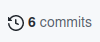
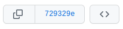

Conceitos¶
Repositório¶
Também conhecido como repo ou repository, um repositório é um local para armazenar código-fonte, ou informações textuais, sobre o desenvolvimento de uma aplicação, algoritmo, ou software.
Não se deve guardar arquivos binários (e.g. .exe) em um repositório de código-fonte, pois não é este o objetivo dessas ferramentas. Arquivos binários são melhor armazenados em drives online (e.g. Google Drive, One Drive, Dropbox, etc).
Para verificar se um arquivo é binário, tente abri-lo pelo bloco de notas: se o texto não for legível, então o arquivo é binário.
Branch¶
Uma branch é um recurso do git para manter um código-fonte paralelo ao
código-fonte principal. No Github, a branch principal é chamada de
main; este é o mesmo main que escrevemos quando damos os comandos
git push origin main e git pull origin main.
Contudo, se tivéssemos outra branch em um dado repositório, vamos supor
que de nome teste, e quiséssemos baixar ou enviar código para esta
branch, faríamos git pull origin teste e git push origin teste.
A ideia de usar branches é isolar códigos-fonte que estão sendo desenvolvidos por equipes (ou pessoas) diferentes. Por exemplo, se levássemos em consideração a equipe que desenvolve o aplicativo Instagram, existem diversas equipes de desenvolvedores trabalhando ao mesmo tempo neste aplicativo. Uma equipe poderia ser responsável por atualizar o software da câmera, enquanto outra muda uma parte do layout do app. Portanto, usar branches neste cenário é vantajoso, pois as modificações feitas pela equipe do layout não irão interferir no código das outras equipes.
Por costume, mantemos sempre na branch main o código-fonte de produção (ou seja, o código-fonte que está pronto para ser entregue ao cliente). Como neste curso não temos clientes para os quais vender um produto, não tem problema usar a branch main para desenvolver todo o código-fonte de um trabalho. Mas tenha em mente que em uma empresa, esta é a filosofia adotada.
Você pode criar quantas branches quiser, com os nomes que quiser. Inclusive, você pode ter branches que são branches de outras branches, como mostrado na figura abaixo.
Commit¶
Um commit é um checkpoint, uma versão do código-fonte em uma determinada branch. Ele possui um identificador único, um código gigante, chamado de hash.
Commits são salvos no repositório (tanto local quanto remoto) para sempre, a menos que sejam explicitamente deletados por alguém. Com isso, os arquivos daquele commit estão salvos, mesmo que posteriormente sejam modificados ou deletados. Esta é uma das maiores vantagens de utilizar-se o git, pois podemos ver o histórico de um arquivo, podendo inclusive ver quem escreveu cada linha de cada arquivo.
Você pode ver a lista de commits de uma determinada branch clicando no botão de commits, na página inicial de um repositório:

Você pode ver os commits da branch main deste repositório neste link. Para cada um dos commits neste link, existem três botões:

O primeiro botão copia a hash do commit; o segundo botão mostrará uma lista das modificações que foram feitas naquele commit. O terceiro link mostra a estrutura do repositório como estava na época deste commit.
Qual a diferença entre repositório remoto e local?¶
Primeiro, vamos por partes: um repositório é uma pasta que por
sua vez possui outra pasta dentro de si, oculta, chamada .git.
Dentro da pasta oculta .git, existem diversos meta-arquivos que
fazem o controle dos arquivos do repositório.
Um repositório é um repositório independentemente de onde ele esteja: seja na máquina local (e daí vem o termo repositório local), ou seja em algum site (daí vem o termo repositório remoto). Sites que armazenam repositórios são, por exemplo, o Github, GitKraken, BitBucket, Gitlab, dentre outros.
É possível trabalhar com git sem nunca criar uma conta num repositório remoto, porém isso é perigoso, pois caso a máquina local sofra alguma falha (seja formatada, falte energia elétrica, etc), podemos perder os dados.
Boas práticas no uso do git¶
Não é preciso seguir estritamente essa sequência de comandos, mas é altamente recomendado.
Dê um
git statuspara ver se existem modificações não salvas no seu repositório localSe houverem modificações (arquivos escritos em vermelho), salve-as em um commit:
git add <param> git commit -m "mensagem do commit dizendo o que foi feito"Onde
<param>é um parâmetro válido dogit add(veja a entrada do comando add na página Comandos).Ou, alternativamente, descarte-as:
git restore <param>
Onde ``<param>`` é um parâmetro válido do ``git restore`` (veja a entrada do comando restore na página
`Comandos <comandos.md#git-restore>`__).
Dê um
git pull origin <nome da branch remota>para baixar modificações que estão no repositório remotoDê um
git push origin <nome da branch remota>para enviar as modificações ao repositório remoto.
Nota: pode ser que aconteça um conflito no passo 3. Neste caso, consulte esta página para saber como resolver.